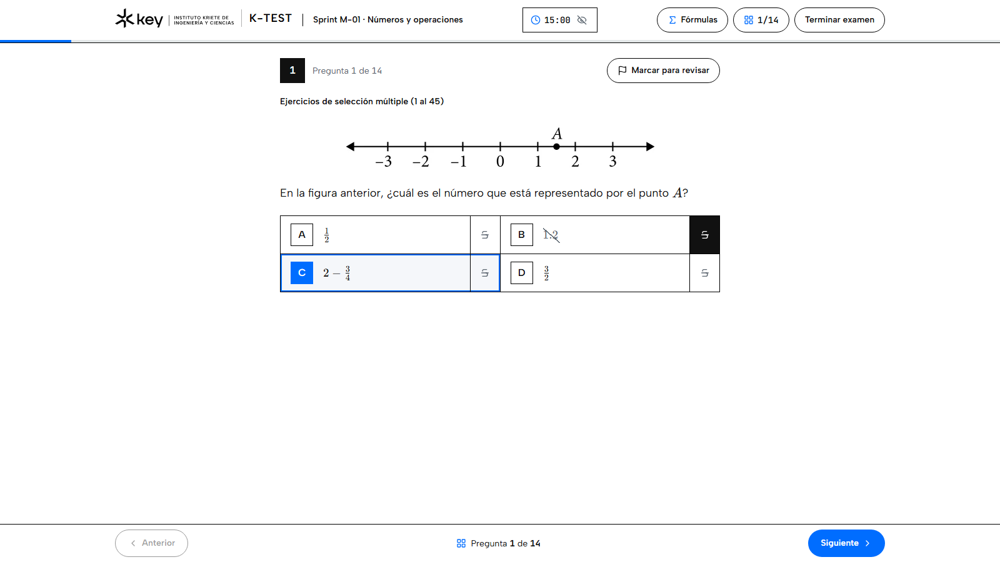
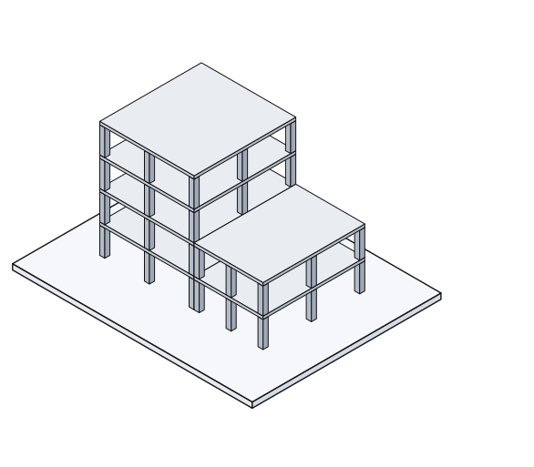
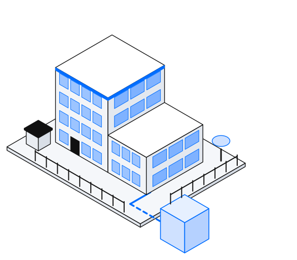

K-TEST
Qué es K-Test
La PAA, practicada como el día del examen, desde donde estés.
Simulacros completos
Sprints cortos por tema
Su nivel, de Emergente a Competente
Material de estudio

Qué es K-Test
Por qué lo hacemos
Conoce la prueba
El formato y los ejercicios de Lectura, Redacción y Matemáticas.
A tu ritmo
Cuando quieras y desde donde estés.
Sin costo
Simulacros, sprints y material, sin pagar nada.
Qué es K-Test
Quiénes lo hacemos
Soham Villacorta
Experiencia y diseño de la plataforma
Iván Figueroa
Datos y servidor de la plataforma
Desde abril cambiamos el rumbo del curso:
Metodología enfocada en el examen
Cada jornada practica el formato, los tiempos y las estrategias de la PAA.
Técnicas para manejar la ansiedad
Para llegar con calma al día de la prueba.
El curso en números
Temporada alta: mayo a julio
184
jóvenes vinieron desde abril
409
asistencias en total
58 %
en mayo, junio y julio
32
93
78
66
50
25
38
27
Abr
May
Jun
Jul
Ago
Sep
Oct
Nov
El curso en números · listas de asistencia, abril a noviembre
Más de un tercio vino un solo sábado
38%
69 de los 184 jóvenes
1 sábado
69
2
41
3
42
4 o más
32
El curso en números · sábados asistidos por joven, desde abril
Impacto desde agosto
Agosto
Noviembre
Subió
Cumplió expectativas
3.87 → 4.62
Motivación
3.83 → 4.43
Me preparó para la PAA
4.04 → 4.52
Retroalimentación
4.13 → 4.57
Por mejorar
Manejo de la ansiedad
3.11 → 3.57
Capaz de aplicarlo
3.43 → 3.95
Claridad para resolver
4.83 → 4.29, bajó
3.0
3.5
4.0
4.5
5.0
El curso en números · encuesta de cada jornada, escala de 1 a 5
Lo que más piden
62
comentarios piden trabajar más ejercicios
Tomar más en cuenta explicar los temas complicados y darle énfasis a los ejercicios de…
Intentar enseñar los ejercicios en una manera de resolver más sencilla y no tan compleja
Aplicaciones de ejercicios y como tener razonamiento matemático
Más ejercicios de otros temas que pueden salir.
Más ejercicios de práctica con los asesores, que ellos nos acompañen en algunos ejercicios
Hacer más ejercicios luego de las explicaciones.
Apoyo en mejor explicacion de los ejercicios, temas y lectura matemática para entender…
Hacer más ejercicios
Más resolución de ejercicios
Ejercicios de lógica y gráficas y líneas
Seguir con los temas y darnos a comprender los ejercicios de la PAA como lo han hecho…
Resolver mas ejercicio
La explicacion rapida y solo hacer un ejercicio
Más ejercicios.
Teniendo mas ejercicios de práctica que hagamos todos o en grupos
Designando ejercicios a resolver
Más resolución de ejercicios.
Poniendo más ejercicios de práctica
Que no se profundizase tanto en cada ejercicio
Que no había muchos ejercicios de practica
Mas teoria o aplicar mas ejercicios faciles y después hacer los examenes
Tomar más en cuenta explicar los temas complicados y darle énfasis a los ejercicios de…
Intentar enseñar los ejercicios en una manera de resolver más sencilla y no tan compleja
Aplicaciones de ejercicios y como tener razonamiento matemático
Más ejercicios de otros temas que pueden salir.
Más ejercicios de práctica con los asesores, que ellos nos acompañen en algunos ejercicios
Hacer más ejercicios luego de las explicaciones.
Apoyo en mejor explicacion de los ejercicios, temas y lectura matemática para entender…
Hacer más ejercicios
Más resolución de ejercicios
Ejercicios de lógica y gráficas y líneas
Seguir con los temas y darnos a comprender los ejercicios de la PAA como lo han hecho…
Resolver mas ejercicio
La explicacion rapida y solo hacer un ejercicio
Más ejercicios.
Teniendo mas ejercicios de práctica que hagamos todos o en grupos
Designando ejercicios a resolver
Más resolución de ejercicios.
Poniendo más ejercicios de práctica
Que no se profundizase tanto en cada ejercicio
Que no había muchos ejercicios de practica
Mas teoria o aplicar mas ejercicios faciles y después hacer los examenes
El curso en números · comentarios de las encuestas, abril a noviembre
Lo que el sábado no alcanza
Hoy
Con K-Test
Viven lejos del campus
Practican desde su casa
No pueden venir los 4 sábados
Siguen practicando entre sábados
Llegan a la PAA sin conocer la prueba
Hacen el simulacro con preguntas reales
El hueco que llena K-Test
Lo que ya hace el prototipo

Como el día de la prueba
Cronómetro, fórmulas, marcar y descartar opciones.
Su nivel, no un porcentaje
Y cuántos puntos le faltan para el siguiente.

Vista del docente
El avance de cada admitido, en un lugar.
257 → 142
clics para el simulacro completo, tras pruebas de usuario
El prototipo
De la obra a la inauguración

Hoy
Obra gris
Ya tiene
Está en línea en Vercel, con base de datos en la nube y pruebas automáticas en cada cambio.
Falta
Abrir la puerta: hoy solo entra el equipo.




Lo que falta para lanzar · 1 de 5
De la obra a la inauguración
Paso 2
Instalaciones
Ya tiene
Acceso con cuentas de Google y Microsoft.
Falta
Conectarlo con el sistema de admisiones, para que cada admitido y su ciclo lleguen solos. Con TI de Key.
Lo que falta para lanzar · 2 de 5
De la obra a la inauguración
Paso 3
Seguridad y recepción
Ya tiene
PIN para docentes y dominios permitidos.
Falta
Login único de Key, aviso de privacidad, cuidado de datos de menores y respaldos.
Lo que falta para lanzar · 3 de 5
De la obra a la inauguración
Paso 4
Acabados
Ya tiene
Un simulacro completo y 8 sprints.
Falta
Visto bueno de la marca, más simulacros, sprints y material de estudio.
Lo que falta para lanzar · 4 de 5
De la obra a la inauguración
Paso 5
Inauguración
Antes de abrir
Piloto con un grupo de admitidos.
Para abrir
Dirección web de Key, cuentas a nombre de Key y acceso para todos los admitidos.
Lo que falta para lanzar · 5 de 5
Lo que pedimos
Aprobar el proyecto
Para terminar la obra y abrir K-Test a todos los admitidos de Key.
Lo que pedimos
Para los que imaginan, y hacen.
Gracias
K-Test · Soham Villacorta e Iván Figueroa